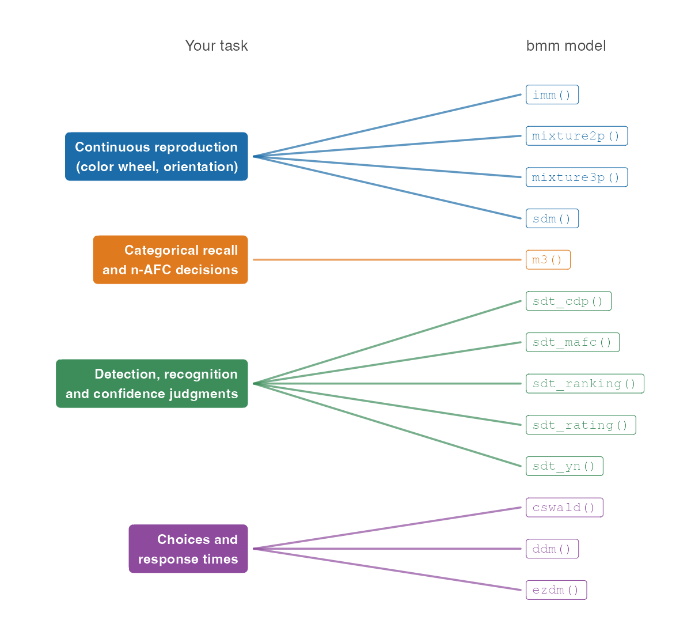

Bayesian Measurement Models for behavioral research in R
bmm fits cognitive measurement models to behavioral data. You write a brms formula for each parameter of the model, and bmm translates the measurement model into a distribution that brms can pass to Stan, the sampler behind it. The result is a hierarchical Bayesian estimate of the parameters that describe the cognitive processes behind the data, such as memory precision, the rate of guessing, or the sensitivity in a recognition task, in the same formula interface you already use for regression.
The documentation website has a Get started page and one article per model family. This page gives you the short version.
Which model for your task
You arrive with data from a task, so this is how the models are organized. The lists below are generated from the package, so they show the models of the version this page was built from.
Continuous reproduction. Participants reproduce a color, an orientation or another continuous feature, and the response error is the dependent variable. See the continuous reproduction article.
-
imm(): Interference measurement model by Oberauer and Lin (2017) -
mixture2p(): Two-parameter mixture model by Zhang and Luck (2008) -
mixture3p(): Three-parameter mixture model by Bays et al (2009) -
sdm(): Signal Discrimination Model (SDM) by Oberauer (2023)
Categorical recall and n-AFC decisions. Participants choose one response from a set of categories (n-alternative forced choice), for example the correct item, an item from another position, or an item that was not studied. See the M3 article.
-
m3(): The Multinomial / Memory Measurement Model
Detection, recognition and confidence judgments. Participants decide whether a signal was present or an item was studied, rate their confidence, give Remember/Know judgments, pick the target among several alternatives, or rank the alternatives. One signal detection model per response format, each fit to response counts per participant and condition. See the signal detection article and, for the dual-process and meta-d′ versions of sdt_rating() and the Remember/Know model sdt_cdp(), the dual-process and meta-d′ article. The Get started page has a table of the response formats and the noise distributions each model offers.
-
sdt_cdp(): Continuous Dual-Process Signal Detection Theory (CDP) -
sdt_mafc(): Signal Detection Theory (m-AFC) -
sdt_ranking(): Signal Detection Theory (Ranking) -
sdt_rating(): Signal Detection Theory (Confidence Rating) -
sdt_yn(): Signal Detection Theory (Yes/No)
Choices and response times. Participants choose between two options and the response time is recorded, either on every trial or as means and variances per condition. See the DDM, censored shifted Wald, EZ-diffusion and response time contamination articles.

bmm_models() prints the same list in R, and ?modelname (for example ?imm) documents what data a model expects and what its parameters mean.
Install
The released version is on CRAN:
install.packages("bmm")Fitting a model needs a C++ compiler and a Stan backend, cmdstanr or rstan; we recommend cmdstanr. Run bmm_setup() to check both. It prints one fix for every check that failed and installs nothing itself:
bmm::bmm_setup()Install the development version
if (!requireNamespace("remotes")) {
install.packages("remotes")
}
remotes::install_github("popov-lab/bmm", upgrade = "never")upgrade = "never" keeps remotes from updating the packages bmm depends on. Updating Rcpp, StanHeaders or RcppParallel underneath an installed rstan can leave rstan unable to load, in particular on Windows, and brms needs rstan to store the results of every fit, also with the cmdstanr backend.
Install the 0.0.1 version of bmm (if following version 6 of the tutorial paper on the Open Science Framework)
The package was significantly updated on Feb 03, 2024. If you are following older versions (earlier than Version 6) of the Tutorial preprint, you need to install the 0.0.1 version of the bmm package with:
if (!requireNamespace("remotes")) {
install.packages("remotes")
}
remotes::install_github("popov-lab/bmm@v0.0.1", upgrade = "never")Fit your first model
A fit takes three things: a model object that names the columns of your data, a formula for each parameter written with bmf() (short for bmmformula()), and the data. Here we fit a yes/no signal detection model to the recognition data of Broeder and Schuetz (2009) that ships with the package. Its two parameters are the sensitivity d and the response criterion. The data has five conditions that varied the proportion of old items, so we estimate one criterion per condition (0 + condition), and we let both parameters vary between participants ((1 | id)):
library(bmm)
# one row per participant, condition and stimulus type: n_old counts the
# "old" responses in that cell, n_trials the items shown, and stimulus is 1
# for old items and 0 for new items
model <- sdt_yn(
response = "n_old",
stimulus = "stimulus",
n_trials = "n_trials"
)
formula <- bmf(
d ~ 1 + (1 | id),
criterion ~ 0 + condition + (1 | id)
)
fit <- bmm(formula, data = broeder_schuetz_2009_e3, model = model)
summary(fit)The fit is a brms fit with extras, so summary(), posterior predictive checks with pp_check() and the rest of the brms toolbox work as usual. The Get started page walks through this example line by line, including how to read the summary.
Learn more
- Articles: one per model family, plus the bmmformula syntax and how to extract priors, Stan code and Stan data from a model.
- Function reference
- Changelog
- Something missing or broken? Open an issue. For a new model, describe it, point to the literature, and link code that already implements it if there is any.
- Want to add a model yourself? Start with the Developer Notes and the Contributor Guidelines.